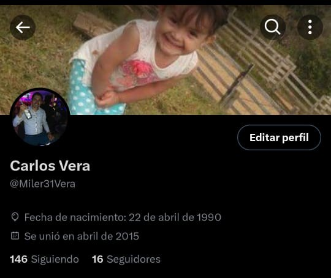
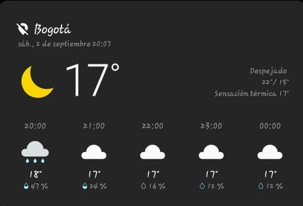
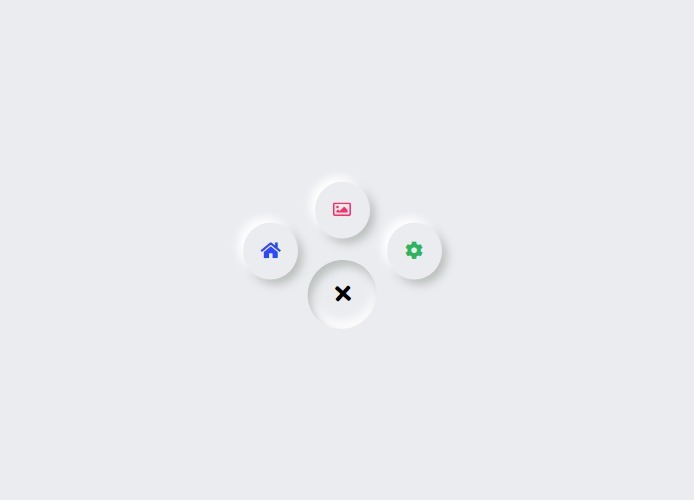

Foto
|
|
|---|
Mi Hoja de Vida
Información Personal
Nombre: Jean Carlos Vera Vejar
Dirección: Carrera 87c # 50a - 16 sur Barrio Betania - Bosa
Teléfono: 3214998626
Correo Electrónico: jean.vera@cun.edu.co
Redes sociales
Jean Carlos Vera Vejar

PRIMARIA
Titulo Obtenido: Primaria
Escuela: Colegio Duque de Rivas
Fecha de Inicio: 01/02/1993
Fecha de Finalización: 30/11/1998
Descripción: Durante mi educación primaria, adquirí una base sólida en materias fundamentales como matemáticas, ciencias, lengua y literatura. Este logro marcó el inicio de mi camino educativo y me proporcionó las habilidades y conocimientos esenciales para mi desarrollo académico y personal.
Jean Carlos Vera Vejar
SECUNDARIA
Titulo Obtenido: Bachillerato
Colegio: IED Brasilia Bosa
Fecha de Inicio: 01/02/1999
Fecha de Finalización: 30/11/2003
Descripción: Mi título de Bachiller en IED Brasilia representa un importante hito en mi educación. Durante mi tiempo en el colegio, adquirí un conocimiento integral en diversas materias y desarrollé habilidades académicas y de resolución de problemas. Este logro refleja mi compromiso con la educación y mi capacidad para cumplir con metas académicas significativas. Durante mi bachillerato, participé activamente en actividades extracurriculares y demostré un fuerte enfoque en el aprendizaje continuo. Mi título de bachiller me ha proporcionado una sólida base para mis futuros estudios y mi desarrollo profesional. Estoy orgulloso de haber completado esta etapa educativa y estoy ansioso por continuar mi trayectoria académica y profesional.
Jean Carlos Vera Vejar
TECNOLOGÍA
Titulo Obtenido: Tecnológo
Escuela:Escuela Militar Sargento Inocencio Chincá
Fecha de Inicio: 04/09/2006
Fecha de Finalización: 27/03/2008
Descripción: La obtención del título de Tecnólogo en Ciencias Militares en la Escuela representa un hito significativo en mi formación académica y profesional. Durante mi tiempo en esta prestigiosa institución, adquirí conocimientos especializados en ciencias militares, tácticas de combate, liderazgo y gestión de recursos. Este título refleja mi dedicación al servicio militar y mi compromiso con el aprendizaje continuo. A través de rigurosos programas de estudio, entrenamiento físico y prácticas en el terreno, desarrollé habilidades esenciales para el liderazgo efectivo, la toma de decisiones bajo presión y la gestión de situaciones críticas. Mi formación como Tecnólogo en Ciencias Militares me ha proporcionado una sólida base para enfrentar desafíos en el ámbito militar y civil. Estoy orgulloso de haber completado este programa educativo de alta exigencia y estoy preparado para contribuir de manera significativa en el servicio a mi país y en mi futuro profesional.
Jean Carlos Vera Vejar
PROFESIONAL
Titulo Obtenido: Profesional
Escuela:CORPORACIÓN UNIFICADA NACIONAL DE EDUCACIÓN SUPERIOR CUN
Fecha de Inicio: 04/02/2021
Fecha de Finalización: Cursando
Descripción:Estoy cursando actualmente por mi pregrado para superar mis conocimientos para llegar a ser esa persona proactiva, con el fin de alcanzar las metas
Jean Carlos Vera Vejar
Experiencia Laboral
Puesto: Escolta
Empresa: Brinks de Colombia
Fecha de Inicio: 22/04/2014
Fecha de Finalización: Actualmente (si aplica)
Descripción: Durante mi tiempo como escolta en Brinks de Colombia desempeñé un papel fundamental en garantizar la seguridad de nuestros clientes y sus activos. Mis logros y responsabilidades incluyeron: Protección Integral, Planificación de Rutas y Evaluación de Riesgos, Comunicación Efectiva, Manejo de Crisis, Formación Continua, Reducción de Incidentes, Colaboración Efectiva. Mis logros como escolta en Brinks de Colombia, demuestran mi compromiso con la seguridad y la protección de los clientes, así como mi capacidad para mantener la calma y tomar decisiones adecuadas en situaciones desafiantes.
Jean Carlos Vera Vejar
Experiencia Laboral
Puesto: Suboficial del Ejercito Nacional
Empresa: Ejercito Nacional de Colombia
Fecha de Inicio: 04/09/2006
Fecha de Finalización: 04/10/2013
Descripción: Durante mi carrera como Suboficial del Ejército Nacional de Colombia, he tenido el honor de servir a mi país y desempeñar un papel fundamental en la defensa de la nación. Mis logros y responsabilidades incluyeron: Liderazgo Efectivo, Protección Integral, Planificación y ejecución de operaciones, Capacitación y formación de personal, Manejo de Crisis, Gestion de Recursos, Mantenimiento de la disciplina, Colaboración Efectiva e interinstitucional y reconocimientos y distinciones. Mis logros como Suboficial reflejan mi compromiso con la misión y la seguridad de mi país, así como mi capacidad para liderar en situaciones críticas y trabajar en equipo. Estoy orgulloso de mi servicio en el Ejército Nacional de Colombia y de las lecciones de liderazgo y disciplina que he adquirido durante mi tiempo en las fuerzas armadas.